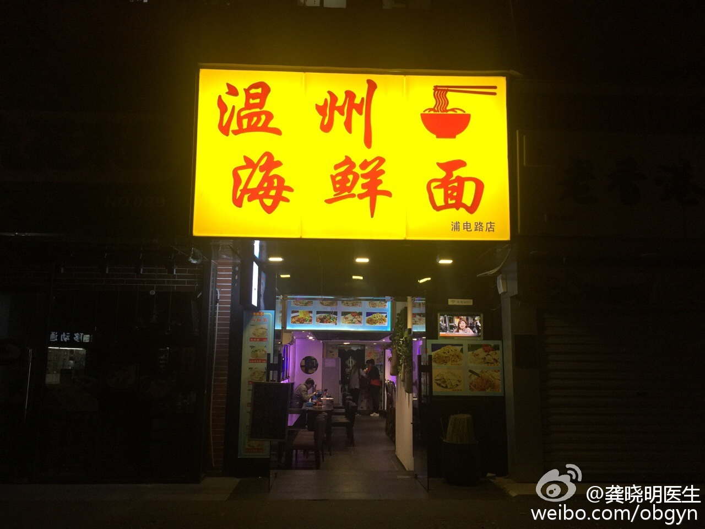

//@龚晓明医生:@张强医生 和我说过一句话我印象深刻：80年代的时候温州国有商店门口那些摆小摊的谁都看不起，30过去了，国有商店不在了，小商贩成为了大老板占据了原来国有商店的位置。我想我们这些人也许就如同80年代的门口小商贩，但是我们期待改变未来。@龚晓明医生:晚上11点肚子饿了走进一家面馆吃顿夜宵，现在似乎是很平常的事，生于70后的我经历了物资短缺需要用粮票的时代，那个年代的售货员也是服务态度不好，环境不佳。现在的医疗如同70年代的餐馆，没有选择，态度不好，我坚信医疗会变好的，市场化是必然的道路。 